A traveller's field-guide to earth houses through history — and the many ways to build them
“Look. Listen. Imagine. Plan. Then build.”
Researched for Arthur Parker, Class 3 Great Builder
A research companion — the choosing, planning and building stay Arthur's own work.
Half the world lives in earth
When you dig in the garden, you are touching one of the oldest building
materials on Earth. For more than 10,000 years, people everywhere have
reached down, scooped up the ground beneath their feet, and turned it into a
home. Even today, about one in every three people in the world lives in
a house made of earth.
Why mud? Because it is everywhere, it is free, and it is
clever. Thick earth walls do something magical: in the daytime they soak up
the sun's heat and stay cool inside, and at night they slowly let that warmth
back out. A mud house is cool in the desert afternoon and cosy in the cold
night. It muffles noise, it doesn't burn, and when a mud house is no longer
needed, it simply melts back into the ground it came from.
The Great Builder's secret: there is no single “best” way
to build. A good home listens to four things — the people who
live in it, the land around it, the weather it must stand up
to, and the materials the Earth gives nearby. Every home in this book
is a different answer to those same four questions.
How to use this book
First, meet the eight ways of making an earth home — the
builder's toolkit. Then travel the world and visit 24 real earth homes,
from the very oldest villages to a mud-brick house built in Australia. Each one
tells you where it is, who lived there, what the weather is like, and how its
builders were clever. At the end, there's a page to help you choose which kind
of home you might build as your model.
Every fact in this book was checked against real sources
(listed at the back). The photographs are all freely-shared pictures, with
their photographers credited on the credits page.
Part One The Eight Ways of Making an Earth Home
Before you can build, you need to know the builder's tricks. Every mud
home in the world is made using one (or a mix) of these eight methods.
The Builder's Toolkit — 1 to 4
1. Adobe — sun-dried bricks
stacked
Mud and straw are pressed into a wooden mould to make a brick, then tipped
out and left in the sun to bake hard — no oven needed. The dry
bricks are stacked into walls and glued with more mud. This is the most
common earth method on Earth. Adobe is an old Arabic-Spanish word for
mud brick.
2. Cob — mud loaves, no bricks
shaped
No bricks at all. Sticky mud, straw and water are trodden together
(often by bare feet!) into big lumps called cobs. The builder
stacks the lumps by hand and squishes them into one thick, curvy wall, then
trims it smooth with a spade. Slow, but wonderfully strong.
3. Rammed earth (pisé)
packed
Slightly damp earth is poured into a strong wooden box (a form)
and then pounded down hard with a heavy tamper, layer by layer, until
it is as solid as soft rock. Lift the box away and the wall stands on its
own. You can often see the stripey layers. Some rammed-earth walls have
lasted over a thousand years.
4. Wattle and daub
woven & layered
First a lattice of thin sticks or bamboo is woven between wooden
posts (the wattle). Then sticky mud mixed with straw and even animal
dung is smeared all over it and left to dry (the daub). The sticks
hold the mud; the mud fills the gaps. One of the oldest tricks of all.
The Builder's Toolkit — 5 to 8
5. Compressed earth block
pressed
A newer, modern cousin of adobe. Instead of drying in the sun, damp
earth is squeezed very hard in a metal press (worked by a lever) to
make a neat, dense block straightaway. The blocks are so even they stack
like toy bricks. Strong, fast, and still just earth.
6. Mud plaster & render
layered
Almost every earth home wears a coat. A smooth layer of fine mud
(sometimes mixed with dung or lime) is spread over the walls like icing on
a cake. It fills cracks, keeps rain from washing the wall away, and can be
re-smeared every year. In many places re-plastering the house is a job for
the whole village.
7. The Nubian vault
fitted
A brilliant desert trick from Sudan, where there is almost no wood. The
builder leans sun-dried bricks against a back wall at a slight angle,
so each brick holds up the next, and builds a curved roof that supports
itself — with no wooden frame at all. The result is a cool,
cave-like vaulted home.
8. Puddled mud & sod (turf)
packed & piled
The simplest of all. Puddled mud means piling wet earth up by hand
in courses, letting each layer dry before adding the next — a wall
with no bricks and no mould. Sod (or turf) goes further: the builder
slices the grassy ground itself into heavy blocks, roots and all, and stacks
them like bricks. Used where the earth is held together by grass roots.
Part Two 24 Earth Homes Around the World
Now we travel. Each home is a Great Builder's answer to one place, one
climate, and one set of materials. Watch how the same humble mud becomes a
round tower, a painted palace, a desert skyscraper and a cosy cottage.
A journey through 10,000 years
People have built with earth for a very, very long time — longer
than castles, longer than writing, longer than the wheel. Here is when the homes
in this book were first built. Many are still lived in or still being built
today, so earth building never really stopped!
Each new age of builders discovered a
new trick. Watch how the ideas add up over ten thousand years —
the orange note
shows what was new.
~11,000 yrs ago Stone Age
1
2
Jericho & Çatalhöyük NEW: the very first mud-brick homes
Eltham mud-brick homes, Australia (1947) NEW: earth homes chosen to live gently with nature
The very first mud-brick home?The oldest ones we know
of were the round houses of Jericho, built by the world's first farmers
about 11,000 years ago (around 9,000 BC) — older than the
pyramids, older than writing, older than the wheel. Their bricks were
shaped by hand like little loaves of clay, long before anyone invented the
brick mould. Two other very early villages, Çayönü in Turkey and
Tell Aswad in Syria, are almost as old.
1about 10,500 years ago
Jericho Round House
📍 Jordan Valley, Palestine — the world's oldest town
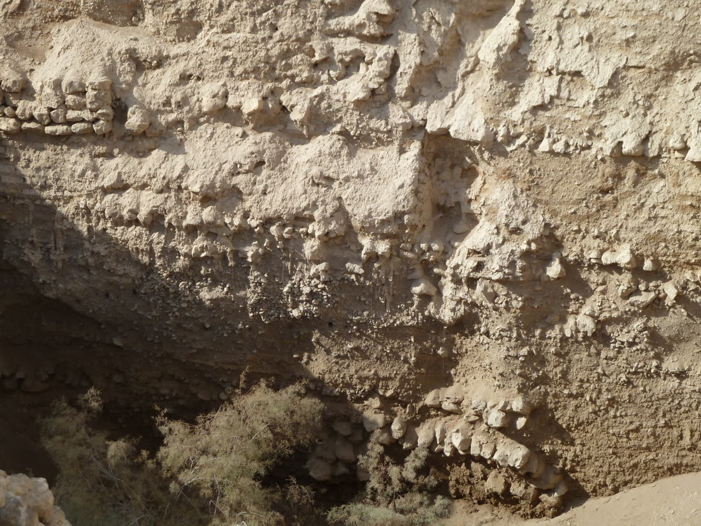
Left: the real dried-mud and stone ruins at Tell es-Sultan, Jericho. Right: what one round home looked like.
🔍 Spot it!
A Walls of hand-shaped mud bricks, dried in the sun
B Roof of brushwood smeared with mud
C One small, low doorway
D Round shape — strong and easy to build
📖 The story
Jericho is one of the oldest towns on Earth. Its people were some of
the first farmers ever — they had just learned to grow wheat, so instead
of following the animals they hunted, they stayed in one place and needed
homes that lasted.
They had no brick moulds yet, so they squeezed clay and straw into
bricks by hand and baked them in the hot sun. Round walls were quick to
build and didn't need strong corners. The thick mud kept the house cool in
the blazing valley heat.
Who: the world's first farmers
Climate: hot, dry desert oasis
Built with: hand-shaped mud bricks
Land: a green spring in dry hills
Roof: brushwood + mud
Method: adobe (sun-dried)
Wow! Jericho's people built a huge stone tower over 8 metres tall more than 10,000 years ago — long before metal tools or writing existed!
2about 9,000 years ago
Çatalhöyük Roof-Door House
📍 Konya Plain, Turkey — a town with no streets
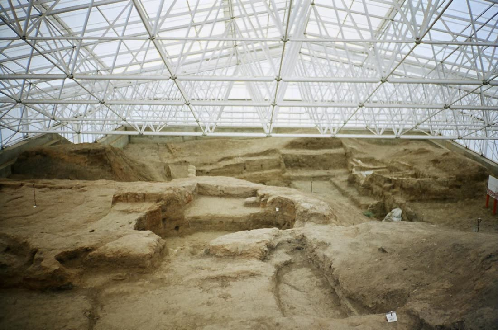
Left: the excavated mud-brick walls, packed together with no gaps. Right: how you entered — through the roof!
🔍 Spot it!
A Flat roofs were the streets — people walked on top
B A hole + ladder to climb down inside
C No doors on the ground at all
D Houses share walls, packed like a honeycomb
📖 The story
Thousands of people lived here squeezed together with no streets between
the houses. To get home you climbed onto the rooftops, walked across town
along the roofs, and dropped down a ladder through a hole into your house.
Why build so strangely? Packing the mud houses tightly made them strong
and warm, and having no low doors kept out the cold wind, floods and wild
animals. The roof hole also let the cooking smoke escape.
Who: early farming families
Climate: hot summers, cold winters
Built with: mud bricks + plaster
Land: a flat grassy plain
Door: a hole in the roof!
Method: adobe (sun-dried)
Wow! Families painted pictures on their walls and even buried loved ones under the floors of their own homes.
3about 5,000 years ago
Sumerian Mud & Reed House
📍 Southern Iraq — the land between two rivers
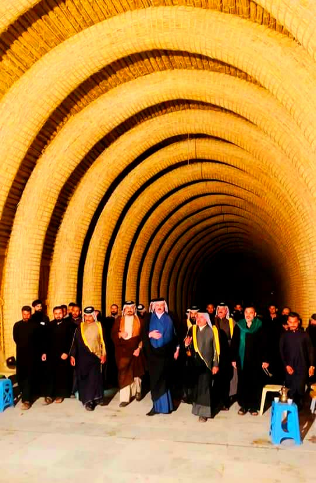
Left: a real reed guesthouse in the Iraqi marshes, built the same way for 5,000 years. Right: the reed-arch shape.
🔍 Spot it!
A Giant reed bundles bent into arches
B Walls of woven reed mats
C Thick mud-brick homes nearby for winter
D A curved reed roof — the first archways!
📖 The story
The Sumerians built some of the world's first cities, like Ur and Uruk.
There were few trees and no stone, but two things were everywhere:
river clay and tall marsh reeds. So they used both.
Richer families pressed clay into mud bricks and built rooms around a shady
courtyard. Marsh families tied bundles of reeds and bent them into arches.
People think bending those reeds into curves may have given humans the very
first idea for the arch — a shape we still build with today.
Who: the Sumerians
Climate: very hot, dry + marshes
Built with: mud brick & reeds
Land: flat river plains
Shape: courtyard + reed arch
Method: adobe + reed
Wow! The Marsh Arabs of Iraq still build these tall reed houses today — almost exactly as the Sumerians did 5,000 years ago.
4about 3,400 years ago
Egyptian Tomb-Builder's House
📍 Deir el-Medina, Egypt — by the Valley of the Kings
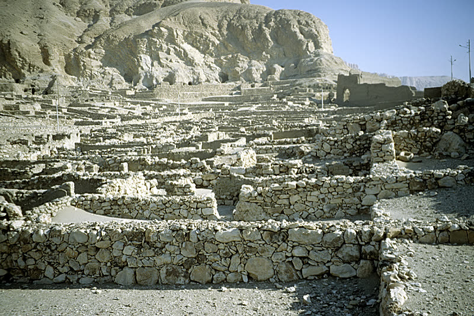
Left: the real mud-brick village walls still standing in the desert near Luxor. Right: one whitewashed home.
🔍 Spot it!
A Mud-brick walls painted white to bounce off the sun
B Small windows set up high for shade
C A stone base to keep out damp
D Inside stairs up to a flat roof for sleeping
📖 The story
This tidy walled village was home to the craftsmen who carved and painted
the pharaohs' secret tombs, and their families. The government even built
the houses for them in neat rows.
In the fierce Egyptian sun, they were clever: white paint reflected
the heat, and windows up high let in light without the harsh glare. On
hot nights the whole family climbed the inside stairs to sleep up on the cool
flat roof under the stars.
Who: royal tomb craftsmen
Climate: hot desert, cool nights
Built with: sun-dried mud bricks
Land: a bowl in bare hills
Walls: plastered + painted white
Method: adobe (sun-dried)
Wow! These villagers left so many notes on stone that we know their names and arguments — and they went on one of history's first-ever workers' strikes!
5a 3,000-year-old idea
Nubian Vault House
📍 Sudan & southern Egypt — along the River Nile
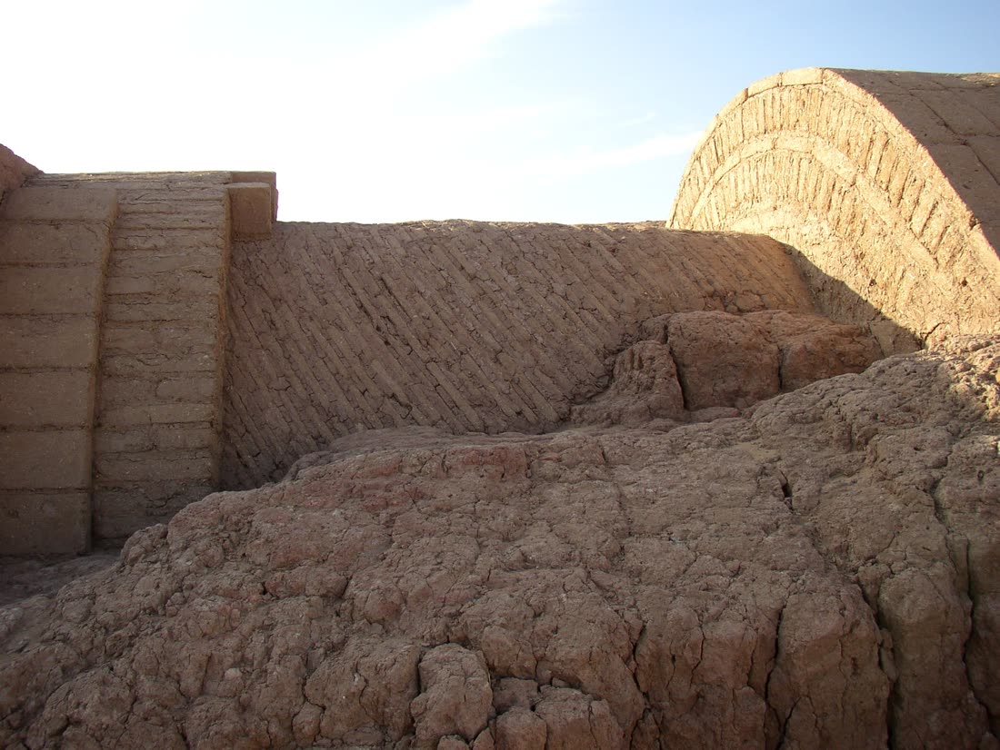
Left: a real curved Nubian vault at the Nubia Museum, Aswan. Right: the leaning-brick roof shape.
🔍 Spot it!
A Bricks leaned at a slant, each holding the next
B A special curve (like a hanging chain) — super strong
C A thick earth roof that stays cool inside
D Built with no wooden frame at all
📖 The story
In the Nubian desert there is almost no wood, so builders couldn't
make a wooden frame to hold up a roof while it dried. They invented a genius
trick instead: lean the mud bricks against a back wall at a slight angle, so
each new brick rests on the one before, curving up and over until the roof
closes itself.
The curve they use is called a catenary — the exact shape a
chain makes when it hangs. It carries its own weight perfectly, which is why
some of these vaults have stood for over 3,000 years.
Who: Nubian master masons
Climate: hot, dry desert
Built with: sun-dried mud bricks
Land: sandy Nile riverbanks
Roof: self-supporting vault
Method: Nubian vault
Wow! The oldest Nubian vault still standing in Egypt is about 3,300 years old — older than most castles in the world!
6rebuilt 1907, style is 700+ yrs
Djenné Earth Buildings
📍 Djenné, Mali — West Africa, by the Bani River
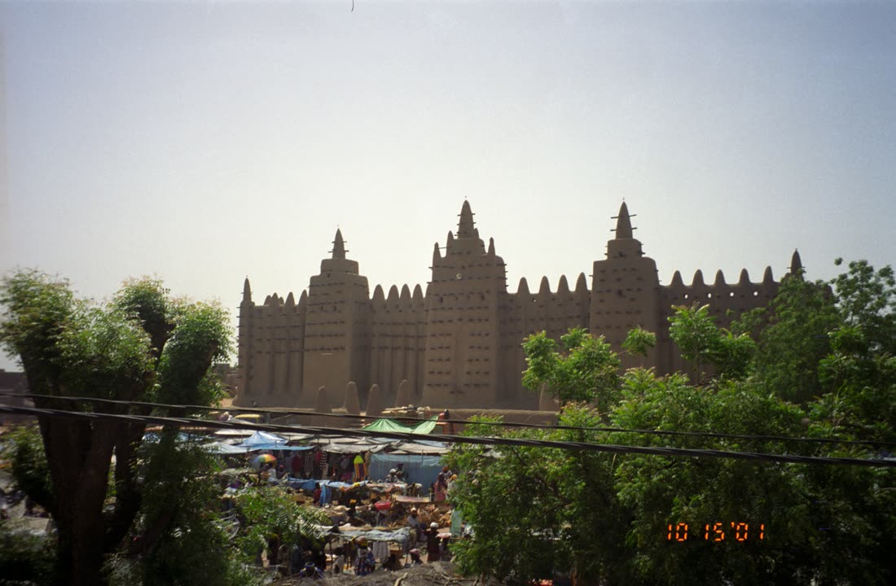
Left: the Great Mosque of Djenné — the largest mud-brick building in the world. Right: the wall shape.
🔍 Spot it!
A Wooden toron sticks poking out of the walls
B Smooth mud plaster (called banco)
C Thick walls that taper thinner near the top
D Tall towers topped with little pinnacles
📖 The story
Djenné's homes and its famous mosque are built from mud bricks called
ferey, coated in smooth mud plaster. The town has a short but very
heavy rainy season, and each year the rain washes a little of the mud away.
So the builders had a brilliant idea: leave wooden sticks sticking out
all over the walls. They aren't just decoration — they are a
permanent ladder. Once a year the whole town holds a festival and
climbs the sticks to re-plaster the building together, keeping it
strong for another year.
Who: the whole community
Climate: hot, dry + heavy rains
Built with:ferey mud bricks
Land: a flat river floodplain
Trick: toron sticks = a ladder
Method: adobe + mud plaster
Wow! The Great Mosque of Djenné is the biggest mud-brick building on the whole planet, and became a World Heritage treasure in 1988.
7a very old tradition
Musgum "Shell" Mud Hut
📍 Northern Cameroon — near Lake Maga
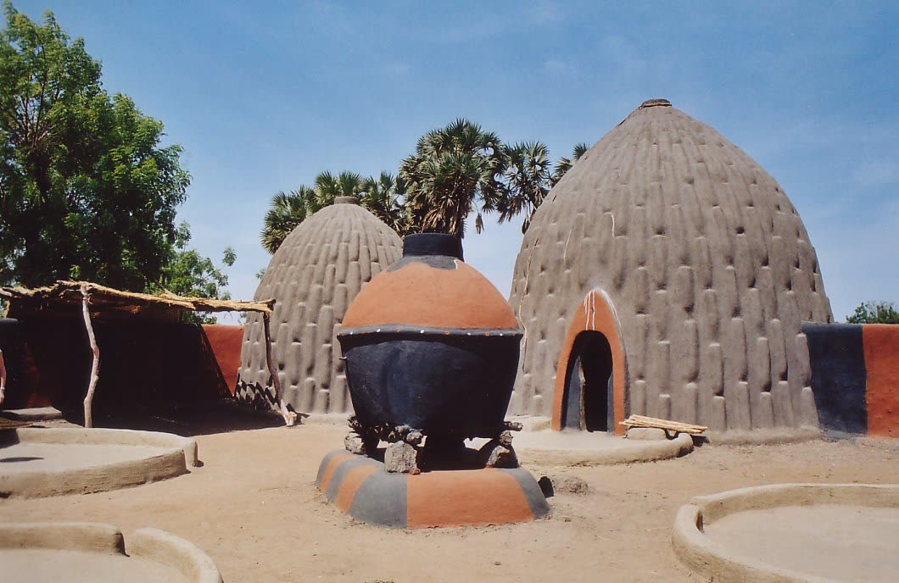
Left: a real Musgum tolek in Cameroon with its ridged mud walls. Right: the tall shell shape.
🔍 Spot it!
A Herringbone ridges — footholds and rain-drains
B A hole at the top for smoke & cool air
C Extra-thick walls at the bottom, thinner up high
D A tall dome shape up to 9 metres high
📖 The story
The Musgum people build these tall, pointed homes from just mud, water
and thatch — no bricks and almost no wood. They pile the mud up in
rings, thick at the bottom for strength and thinner toward the top, curving
into a shape like a giant shell or artillery shell (its nickname is
case obus).
Those criss-cross ridges running up the outside are the clever part: they
help rain run off quickly so it doesn't soak the wall, and they work as
footholds so people can climb up to re-smooth the mud each year.
Who: the Musgum people
Climate: hot, with flooding rains
Built with: mud, water & thatch
Land: flat grassy plains
Shape: tall pointed shell
Method: puddled mud coils
Wow! The hole at the very top isn't just for smoke — it can be an emergency escape hatch if floodwater rises inside!
8painting since the 1500s
Kassena Painted House
📍 Tiébélé, Burkina Faso — West African savanna
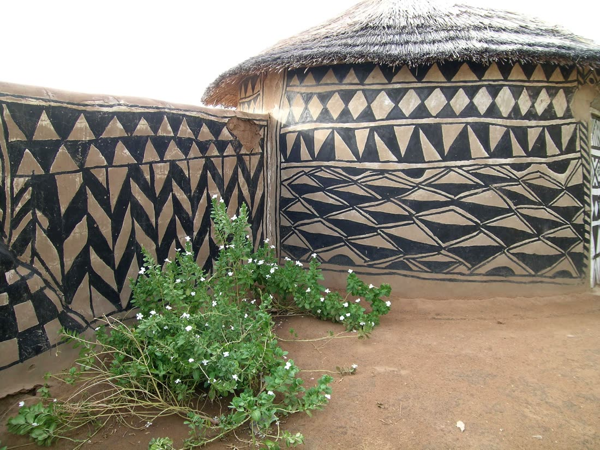
Left: real painted patterns on a Kassena house in Tiébélé. Right: the low, decorated wall.
🔍 Spot it!
A Bold black, white & red painted patterns
B Tiny windows to keep out heat and light
C A very low, small doorway
D Walls polished smooth and varnished
📖 The story
In this village the men build the thick mud walls in the dry season, and the
women do all the painting — passing the patterns down from mother
to daughter for hundreds of years. The colours come from the earth itself:
red from laterite soil, white from chalk, black from charcoal.
After painting, they polish the walls with smooth stones and brush on
a natural varnish made from néré-bean pods, which helps the rain slide off.
The tiny windows and low doors keep the fierce savanna heat out and the
inside cool and dark.
Who: the Kassena people
Climate: hot savanna + rains
Built with: earth, straw & dung
Land: flat, dry grassland
Colours: from soil, chalk & charcoal
Method: painted mud plaster
Wow! The patterns aren't just pretty — each shape tells a story, and the colours have meanings: red for courage, white for honesty, black for the night.
9towers mostly after 1533
Shibam Mud Towers
📍 Wadi Hadhramaut, Yemen — the "Manhattan of the Desert"
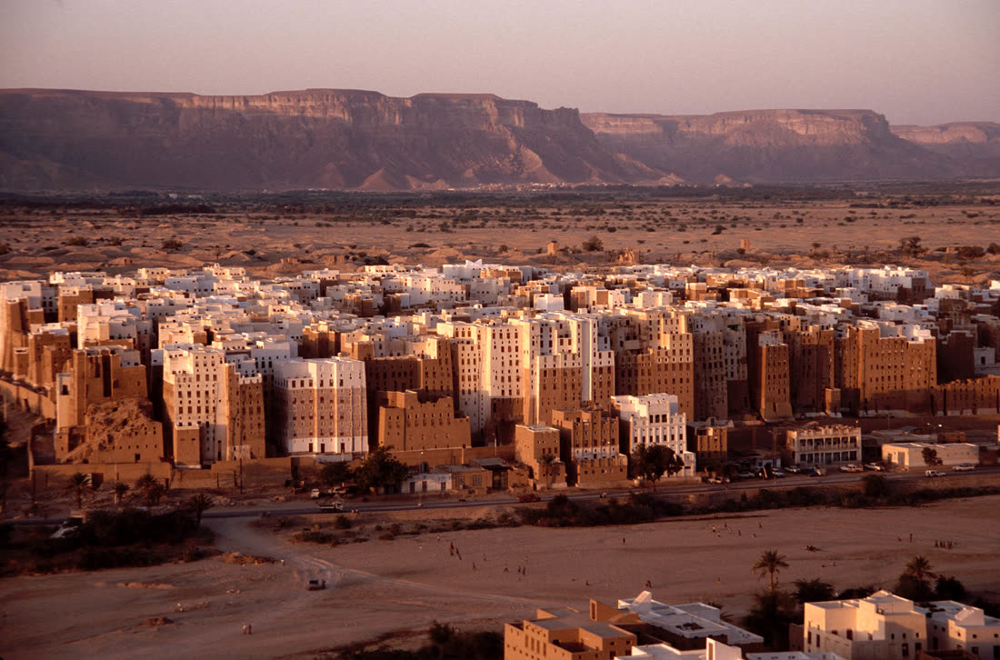
Left: the real mud-brick skyscrapers of Shibam. Right: tall towers packed side by side.
🔍 Spot it!
A Mud towers 5 to 11 storeys tall — up to 30 m!
B Small windows to keep out the desert sun
C White lime tops that protect the mud from rain
D Built up, not out, to save space and stay safe
📖 The story
Shibam sits on a trade route in a flat desert valley. Long ago, families
needed to be safe from raiders and from the floods that sometimes rushed down
the valley — so instead of spreading out, they built straight up.
Every tower is made entirely of mud bricks, some as tall as an
11-storey building. The thick earth walls keep the rooms cool in the
baking heat, and the lower floors (with no windows) were used for storing
grain and keeping animals, while families lived up high where it was cooler
and safer.
Who: Hadhrami trading families
Climate: very hot, almost no rain
Built with: mud bricks + plaster
Land: a flat valley by cliffs
Height: up to 11 storeys
Method: adobe (sun-dried)
Wow! Shibam has some of the oldest skyscrapers in the world — and every single one is made of mud! It became a World Heritage Site in 1982.
102,000+ years old
Yazd Desert House
📍 Yazd, Iran — between two great deserts
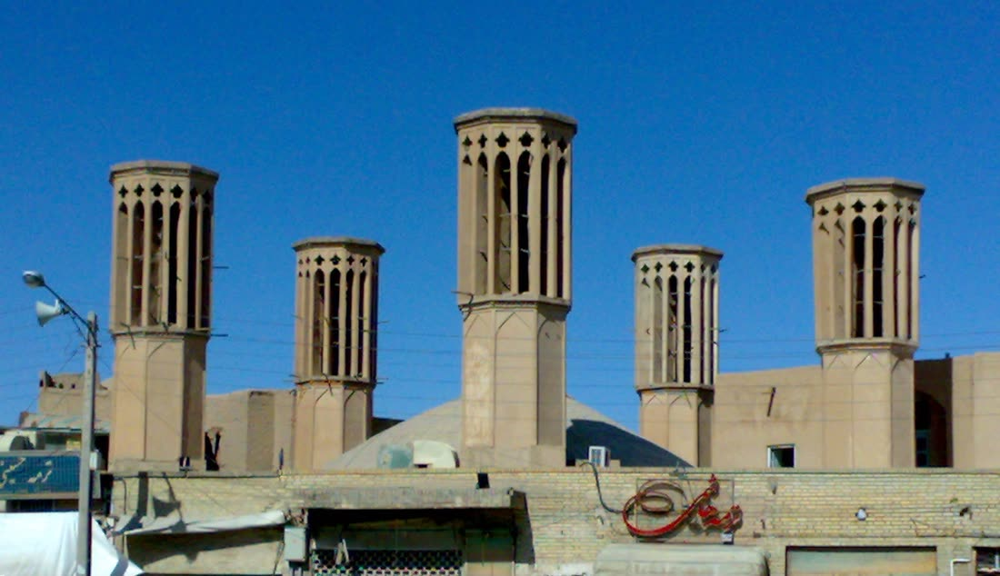
Left: real wind-catcher towers rising above Yazd's rooftops. Right: how a badgir cools the house.
🔍 Spot it!
A A badgir wind-catcher tower — natural cooling
B Thick mud walls that block the heat
C Domed roofs that shed the sun's rays
D Small windows set high up for shade
📖 The story
Yazd is one of the biggest cities on Earth built almost entirely of
mud brick (adobe). Summers here roar past 40°C with almost no rain,
so staying cool is everything.
Long before electric fans, the Yazdi people invented air-conditioning
made of mud. Tall towers called badgirs stand above the roofs and
catch even the smallest breeze, funnelling it down into the rooms below
to cool the family. The thick earth walls do the rest, keeping the fierce
daytime heat outside.
Who: the Yazdi people
Climate: scorching desert, no rain
Built with: adobe mud bricks
Land: flat desert plains
Cooling: wind-catcher towers
Method: adobe (sun-dried)
Wow! A wind-catcher is like a chimney working in reverse — it grabs the breeze from the sky and pours cool air down onto the family below.
11up to 2,000 years old
Arg-e Bam Citadel
📍 Bam, Iran — a whole city made of mud
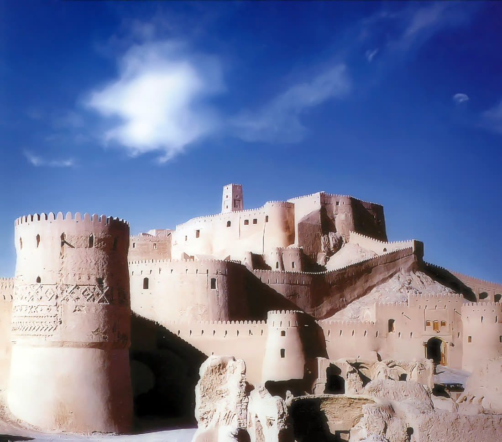
Left: the great mud citadel of Bam, photographed before the 2003 earthquake. Right: its walls and towers.
🔍 Spot it!
A Enormous outer walls up to 7 m high
B 38 watchtowers to guard the city
C A whole town of mud homes inside
D One strong gateway in and out
📖 The story
Arg-e Bam isn't one house — it's an entire walled city built of
mud, standing on the old Silk Road where traders passed through. Inside its
giant walls were homes, stables, army barracks and even a ruler's palace, all
made of earth.
Before 2003 it was probably the largest mud-brick building in the whole
world. Sadly a big earthquake shook much of it down in 2003 — and
people have been carefully rebuilding this earthen city ever since, using the
very same mud methods as the ancient builders.
Who: traders, soldiers & rulers
Climate: hot, dry desert
Built with: mud brick & mud layers
Land: a desert plain on a rise
Size: an entire city!
Method: adobe (sun-dried)
Wow! Arg-e Bam was once the biggest mud-brick building on the whole planet — a giant city made completely of earth.
12a fortified village since the 1600s
Aït Benhaddou Kasbahs
📍 Southern Morocco — on the edge of the Sahara
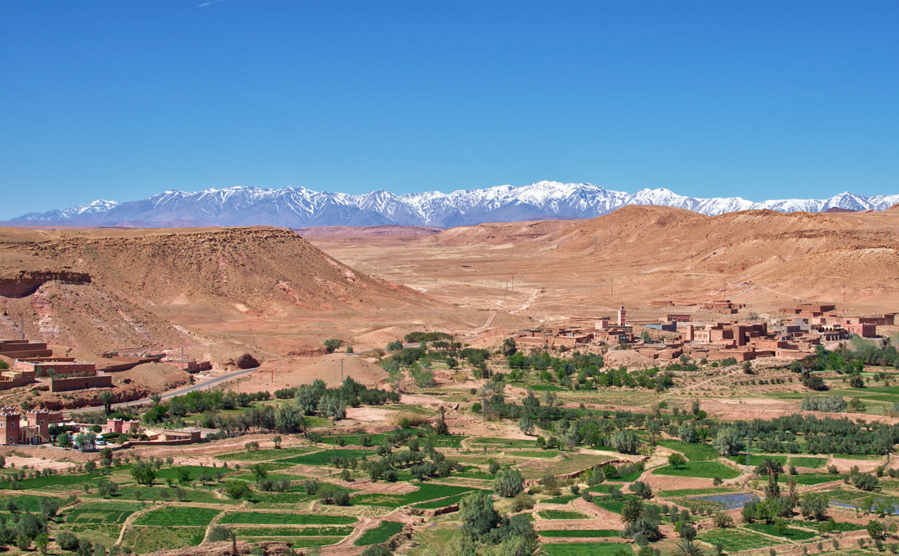
Left: the real earthen kasbahs of Aït Benhaddou climbing the hill. Right: rammed-earth towers.
🔍 Spot it!
A Walls of pisé — earth pounded hard in moulds
B Tall corner towers with notched tops
C Patterns pressed into the upper walls
D A whole fortified village climbing a hillside
📖 The story
Aït Benhaddou is a ksar — a fortified village of tall earthen
houses called kasbahs, built where a caravan route crossed the river
below the Atlas Mountains. Merchants needed their homes to be safe, so they
built thick, tower-topped walls.
The walls are rammed earth: damp earth and straw pounded hard inside
wooden moulds until solid. It's a hot, dry place, but when the rare rain does
come it slowly wears the earth away — so families must repair the walls
again and again to keep the village standing.
Who: merchants & traders
Climate: hot & dry, edge of Sahara
Built with: rammed earth + adobe
Land: a dry mountain river valley
Shape: fortified hillside village
Method: rammed earth (pisé)
Wow! This earthen village is a real movie star — it's been the backdrop for Gladiator, Lawrence of Arabia and Game of Thrones!
13about 4,500 years ago
Mohenjo-daro City House
📍 Sindh, Pakistan — beside the Indus River
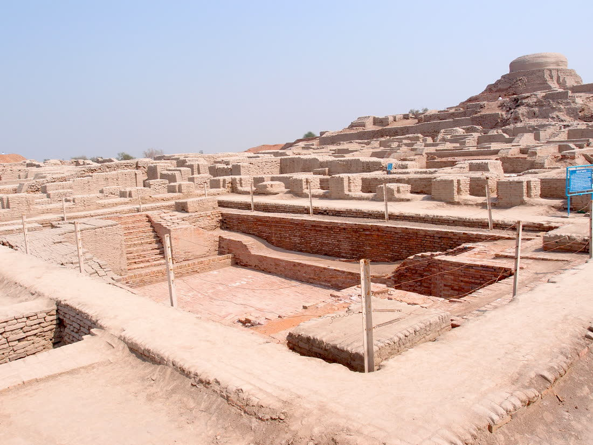
Left: the real brick ruins of Mohenjo-daro, over 4,000 years old. Right: a courtyard house.
🔍 Spot it!
A Every brick made the same size across the city
B An open courtyard (yard) in the middle for shade
C Homes up to two storeys tall
D Covered drains — an early sewer system!
📖 The story
Mohenjo-daro was one of the world's first carefully planned cities,
built by the Indus Valley people. Their streets were laid out in a neat grid,
and their houses turned inward around a private courtyard to stay cool and
quiet.
They were amazing brick-makers. They used sun-dried mud bricks and tough
fired bricks (baked hard in a fire so water can't wash them away), and
made every brick almost the same size — like a giant ancient LEGO
set. The city even had over 700 wells and covered drains along the streets.
Who: the Indus Valley people
Climate: hot, dry river plain
Built with: mud + fired bricks
Land: a flat ridge by the river
Clever bit: drains & 700 wells
Method: adobe + fired brick
Wow! Every brick was made almost exactly the same size across the whole city — like a giant ancient LEGO set with matching pieces!
14oldest from 1371
Fujian Tulou Roundhouse
📍 Fujian, China — green mountain country
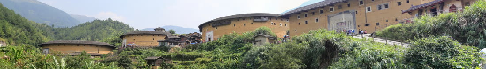
Left: real round tulou earth buildings in Fujian. Right: one giant roundhouse for a whole clan.
🔍 Spot it!
A Rammed-earth walls up to 1.8 m thick
B One big strong gate — the only way in
C Windows only high up (to keep out bandits)
D A giant ring around a shared courtyard
📖 The story
A tulou is not one home — it's a whole village in a single round
building! The Hakka people built these huge earthen rings so that an entire
family clan — sometimes up to 800 people — could all live
together and stay safe.
The walls are rammed earth (damp earth pounded hard between wooden
boards), so thick and strong that bandits couldn't break in. Everyone's rooms
face a friendly shared courtyard in the middle, and every family's rooms are
the same size — so nobody is above anyone else.
Who: the Hakka people
Climate: warm, wet, subtropical
Built with: rammed earth + wood
Land: green hills & rice terraces
Holds: up to 800 people!
Method: rammed earth
Wow! Builders sometimes mixed sticky rice into the earth to help the walls set as hard as rock — a cake recipe that makes a fortress!
153,000+ years old
Yaodong Cave Home
📍 Loess Plateau, Northern China
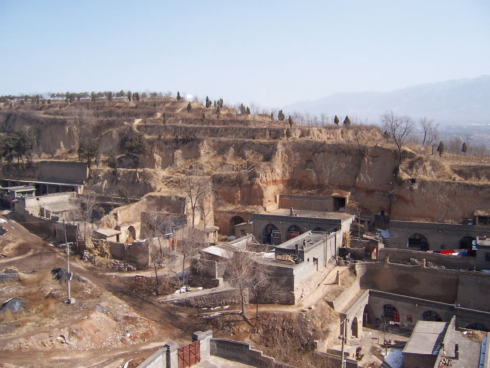
Left: real yaodong cave homes cut into a Chinese hillside. Right: arched rooms dug into the cliff.
🔍 Spot it!
A Arched rooms dug into the hillside — the home is the hill
B Thick earth all around keeps it warm & cool
C Soft yellow loess soil (easy to dig, holds its shape)
D A pretty lattice window & door at the front
📖 The story
Here the builders didn't stack anything up at all — they dug their
home into the ground! Northern China's Loess Plateau is made of deep, soft
yellow soil called loess (say "luss") — a big word meaning dusty
earth blown into place by the wind long ago. It's soft enough to dig, but firm
enough to hold its shape.
Diggers carve an arched room straight into a cliff, or dig a square sunken
yard and cut rooms into its sides. The thick earth all around works like a cosy
blanket (called insulation) — warm in freezing winters, cool in hot
summers, with almost no heating needed.
Who: country families
Climate: cold winters, hot summers
Built with: the earth itself — no bricks
Land: soft yellow loess cliffs
Clever bit: earth = free heating
Method: dug-out cave (loess)
Wow! Tens of millions of people still live in cosy cave homes like these — snug as a hobbit house, and cool as air-conditioning in summer!
16a living Himalayan tradition
Ladakhi Mountain House
📍 Ladakh, India — high in the Himalaya
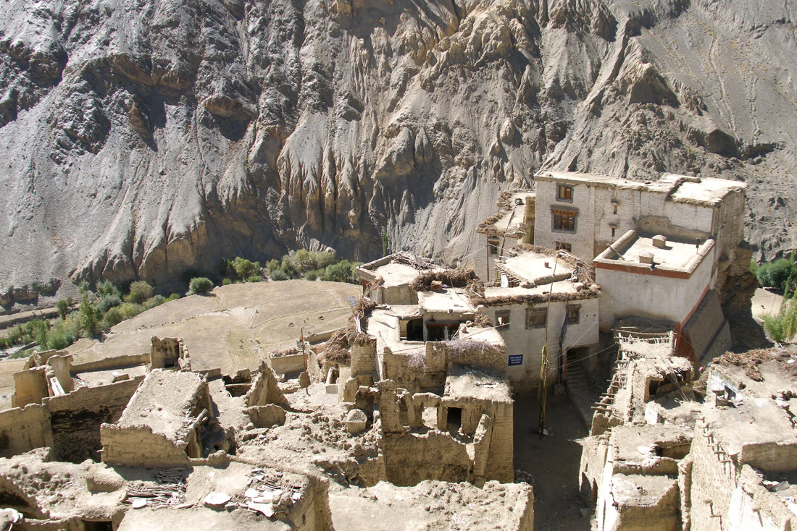
Left: real flat-roofed mountain houses at Lamayuru, Ladakh. Right: a whitewashed home.
🔍 Spot it!
A Thick mud walls that lean in as they rise (a "batter")
B A flat earth roof for drying hay & sleeping
C Walls whitewashed bright white
D A strong stone base under the mud
📖 The story
Ladakh is a cold desert high in the mountains — above 3,000
metres, freezing in winter, with hardly any rain and very few trees. So people
build with what there is: sun-dried mud bricks and rammed earth, on a
base of stone.
The thick earth walls insulate so well that a room can stay warm and cosy
(near 20°C) even when it's −20°C outside! The walls slope
gently inward — a "batter" — to make them stronger, and the flat
roof becomes an extra outdoor room for stacking winter hay and sleeping under
the stars.
Who: Ladakhi mountain people
Climate: freezing cold desert
Built with: adobe + rammed earth
Land: dry, treeless high valleys
Roof: flat, for hay & sleeping
Method: adobe + rammed earth
Wow! The mud walls are such good insulators that it can be cosy inside at 20°C while it's a freezing −20°C outside — a 40-degree difference!
17about 1,000 years old
Taos Pueblo
📍 New Mexico, USA — below the Rocky Mountains
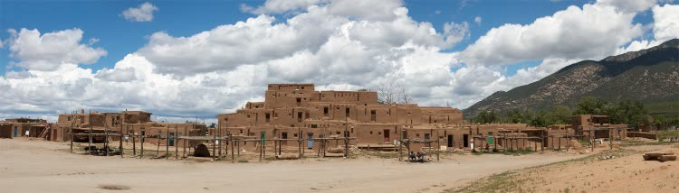
Left: the real many-storeyed adobe homes of Taos Pueblo, lived in for 1,000 years. Right: the terraced shape.
🔍 Spot it!
A Adobe rooms stacked up to five storeys high
B Wooden ladders to climb between levels
C Roof beams (vigas) poking out of the walls
D Thick mud walls, re-plastered by hand each year
📖 The story
The Taos people have lived in this adobe town for about a thousand years
— right up to today, making it one of the oldest lived-in homes in all
of America. It's built of adobe: earth and straw mixed with water and dried
hard in the sun.
The rooms are piled side by side and on top of each other like giant earthy
building blocks. Long ago the bottom rooms had no doors at all —
families climbed ladders and went in through the roof, pulling the ladders up
to stay safe. The roof beams, called vigas (a big word for the wooden
poles that hold up the roof), still poke out of the walls.
Who: the Taos (Puebloan) people
Climate: hot summers, snowy winters
Built with: adobe + wooden vigas
Land: a dry valley by mountains
Height: up to 5 storeys
Method: adobe (sun-dried)
Wow! To keep the old village just as it was, the Taos people still don't allow electricity or running water in the ancient houses — it's a World Heritage Site.
18built 828–1126 CE
Pueblo Bonito Great House
📍 Chaco Canyon, New Mexico, USA
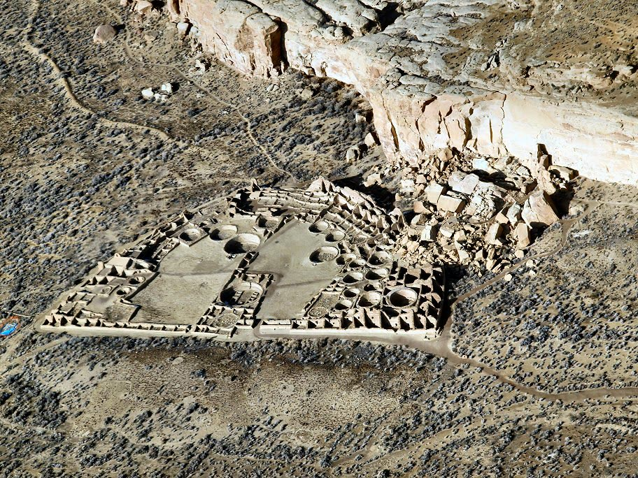
Left: a real bird's-eye view of the huge D-shaped Pueblo Bonito. Right: its plan, seen from above.
🔍 Spot it!
A About 800 rooms in one giant building
B Round underground rooms called kivas
C Stone blocks glued with adobe (mud) mortar
D A huge "D" shape with a long straight front
📖 The story
Pueblo Bonito was a "great house" — an enormous building with
around 800 rooms, rising four or five storeys, made by the Ancestral
Puebloan people about a thousand years ago in a dry desert canyon.
They built it with a clever "core-and-veneer" method: a rubble core faced
with neat sandstone, all held together with adobe (mud) mortar —
the earthy "glue" between the stones. (Mortar is a big word for the soft
paste that fills the gaps and sticks the blocks together.) It grew into a giant
"D" shape over hundreds of years.
Who: the Ancestral Puebloans
Climate: very dry high desert
Built with: sandstone + adobe mortar
Land: a rocky sandstone canyon
Size: around 800 rooms
Method: stone + adobe mortar
Wow! Building Pueblo Bonito took an estimated 805,000 hours of work — and in one room, diggers found eight ancient wooden flutes!
19Spanish colonial, from the 1600s
Spanish-Mexican Adobe Casa
📍 Santa Fe, New Mexico & Mexico
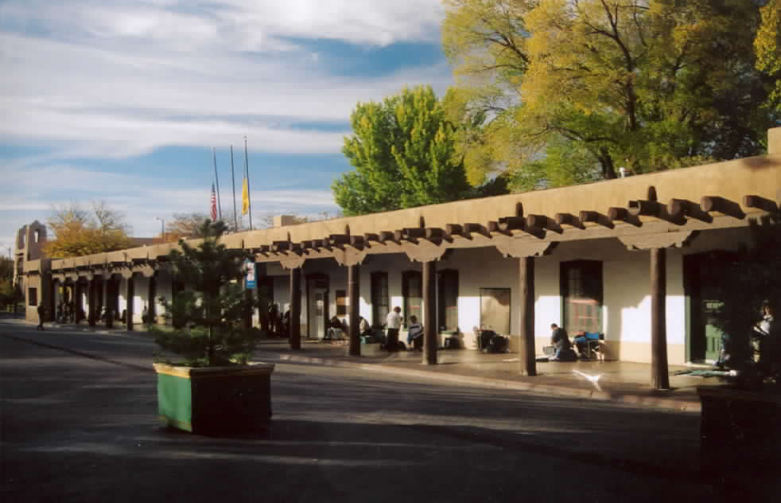
Left: the real adobe front of Santa Fe's Palace of the Governors (built 1610). Right: a flat-roofed casa.
🔍 Spot it!
A Thick adobe walls, coated in mud plaster or stucco
B A flat roof with little water-spouts (canales)
C Wooden roof beams (vigas) across the top
D A shady covered porch along the front
📖 The story
When Spanish settlers came to the dry American Southwest, they learned
adobe building from the Pueblo peoples already living there, and mixed it
with their own ideas from Spain. The result is the cosy flat-roofed
casa (Spanish for "house").
Sun-dried adobe bricks make thick walls that stay cool in the day and warm
at night. A coat of plaster or stucco (a hard outer coating) protects the
mud from rain, and little spouts called canales let rainwater shoot off
the flat roof so it doesn't soak in. Santa Fe's Palace of the Governors has
been used since 1610!
Who: Spanish & Mexican settlers
Climate: dry — hot days, cold nights
Built with: adobe + wooden vigas
Land: dusty desert river valleys
Roof: flat, with water spouts
Method: adobe (sun-dried)
Wow! The Palace of the Governors has been in use since 1610 — that makes it older than almost every other public building in the whole USA!
20pioneer days, 1800s
Prairie Sod House ("Soddy")
📍 The Great Plains, USA — Nebraska & Kansas
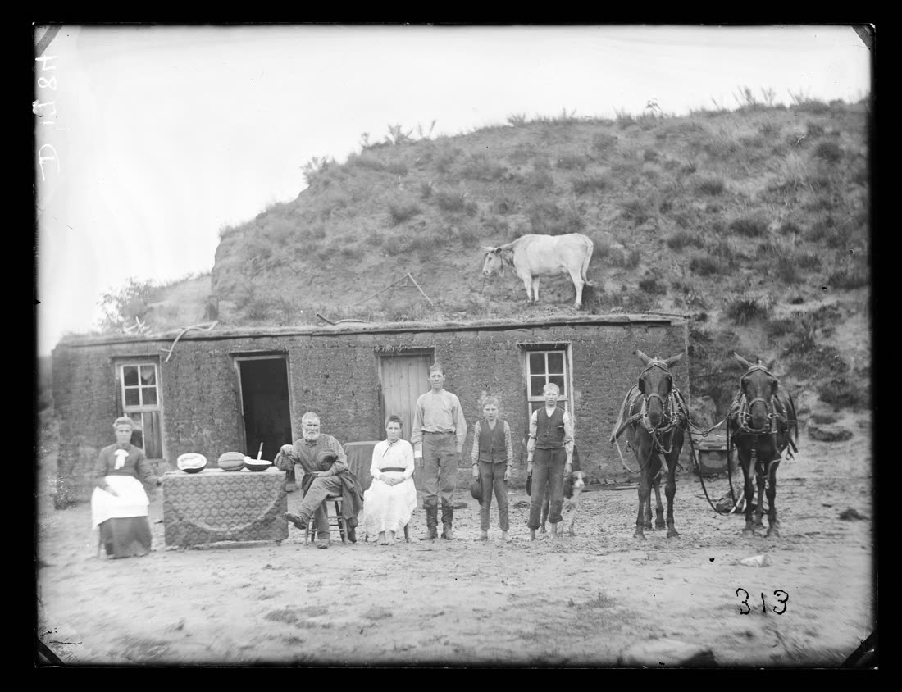
Left: a real Nebraska family in front of their sod house in 1886. Right: stacked turf blocks.
🔍 Spot it!
A Walls of sod — blocks of grass with its roots & soil
B Blocks stacked grass-side down, like heavy bricks
C A roof of branches, brush and more sod on top
D Very thick walls — warm, cool, and won't burn
📖 The story
When pioneer families moved onto the wide American prairie, there were
almost no trees and no stone to build with — just endless grass.
So they built with the grass itself! Sod (also called turf) is a
big word for a slab of earth held together by thick, tangled grass roots.
Settlers cut the sod into heavy blocks and stacked them grass-side down,
like bricks, to make walls. The thick earthy walls kept the little house cosy
in blizzards and cool in summer, and sod doesn't catch fire. The trouble was
rain — a sod roof could leak muddy water, so it needed constant
repair.
Who: pioneer homesteaders
Climate: hot summers, icy winters
Built with: blocks of grassy turf
Land: flat, treeless prairie
Good bits: warm & fireproof
Method: sod / turf blocks
Wow! Sod walls were so thick and cosy that families stayed warm in blizzards — but sometimes bugs, mice, and even snakes lived right inside the earthy walls!
21some over 500 years old
Devon Cob Cottage
📍 Devon, England — the green West Country
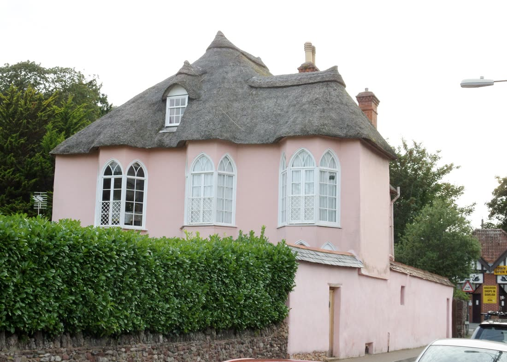
Left: a real thatched cob cottage in Dawlish, Devon. Right: its thick walls and straw roof.
🔍 Spot it!
A Very thick cob walls (mud + straw), often 60 cm!
B A thatched roof — bundled straw or reed — the "good hat"
C A stone base — the "good pair of shoes"
D Soft, curvy walls shaped by hand
📖 The story
In rainy Devon, good stone and timber were hard to get, so country families
built with the earth under their feet. Cob is a mix of clay, straw and
water, piled up in layers by hand and trodden firm — no bricks, no
moulds. The walls come out lovely and curvy.
There's an old Devon saying: "All cob wants is a good hat and a good pair
of shoes." The "hat" is a wide thatched roof (a thick roof made of
bundled straw) to keep rain off the top, and the "shoes" are a stone base to
keep the wall off the wet ground. Kept dry like that, cob lasts for
centuries.
Who: English country families
Climate: cool, wet and rainy
Built with: cob (clay + straw)
Land: green rolling farmland
Roof: thatched straw/reed
Method: cob
Wow! There are still around 20,000 cob cottages standing in Devon today — and some are over 500 years old!
221800s farmhouses
French Pisé Farmhouse
📍 Near Lyon, France — the Rhône valley
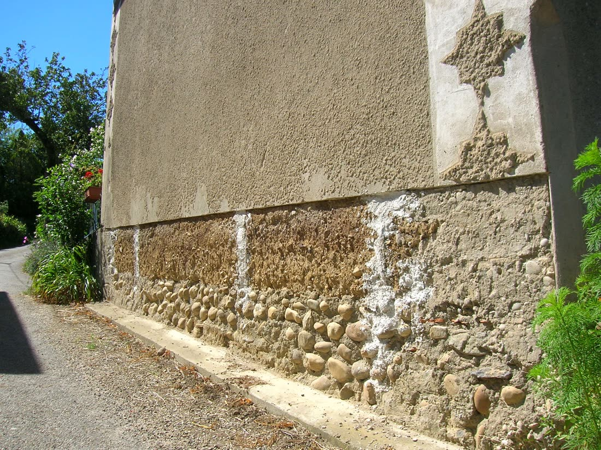
Left: a real rammed-earth (pisé) farmhouse near Lyon. Right: notice the stripey earth layers.
🔍 Spot it!
A Rammed-earth walls with faint stripey layers
B A wide roof overhang to keep rain off the walls
C A stone base to stop damp rising up
D Wooden shutters over the windows
📖 The story
Around the French city of Lyon, farmers found their soil was a perfect mix
of gravel, sand and clay — just right for building. So they made
pisé (rammed earth): they poured damp earth into a wooden mould and
pounded it hard, layer by layer, until it set as solid as soft rock.
You can often still see the faint stripes where each pounded layer sits on
the one below. Like cob, pisé needs a stone base and a good roof overhang to
stay dry. Earth was dug from right beside the house — and the holes left
behind sometimes filled with water to become farm ponds!
Who: French farming families
Climate: warm summers, cool winters
Built with: gravelly rammed earth
Land: farmland & river valleys
Look: stripey pounded layers
Method: rammed earth (pisé)
Wow! Lyon is one of the only big cities in Europe with rammed-earth buildings dotted all over town — even in the suburbs!
23built 1238–1358
Alhambra Rammed-Earth Walls
📍 Granada, Spain — "the red one"
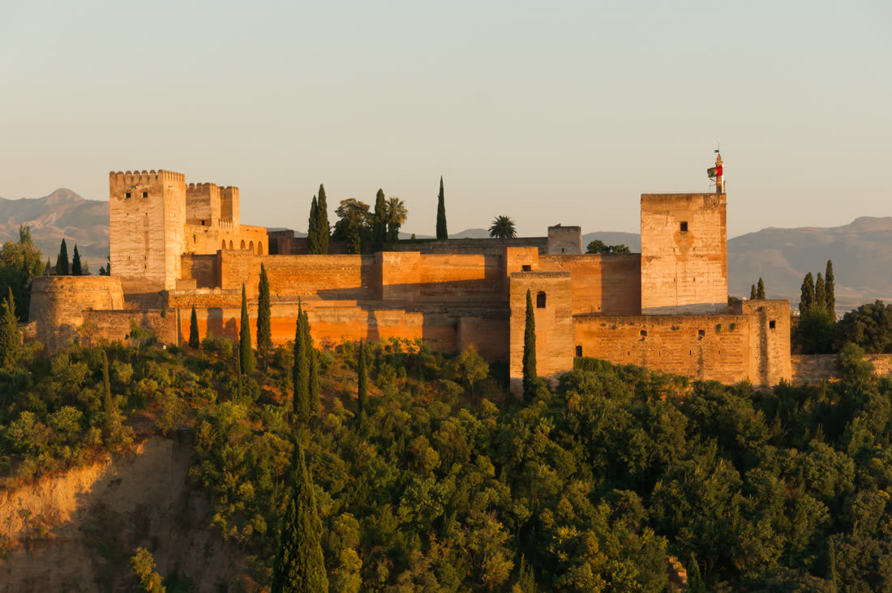
Left: the real rammed-earth walls of the Alhambra's fortress in Granada. Right: its red earth walls & tower.
🔍 Spot it!
ATapia walls — earth pounded hard in moulds
B Lime mixed in to make them super strong
C Tall, thick fortress towers
D Reddish earth — it gave the palace its name
📖 The story
High on a rocky hill above Granada stands the famous Alhambra palace-fortress,
built by Spain's Moorish rulers about 800 years ago. Its mighty walls are
rammed earth, called tapia — but with a secret ingredient.
The builders mixed in lime (a white powder made from heated
limestone), which made this "royal" earth so tough it didn't even need a
plaster coat. The reddish colour of the local earth is why the whole place is
called Alhambra — Arabic for "the red one." Those earthen
walls have survived for nearly 800 years.
Who: Spain's Moorish rulers
Climate: warm, dry Mediterranean
Built with: earth + lime (tapia)
Land: a rocky hilltop
Secret: lime makes it rock-hard
Method: rammed earth (tapia)
Wow! The famous red walls of the Alhambra are made of rammed earth — and millions of people visit this World Heritage wonder every year.
24from 1947 — and still built!
Eltham Mud-Brick Home
📍 Eltham, Victoria, Australia — our local one!
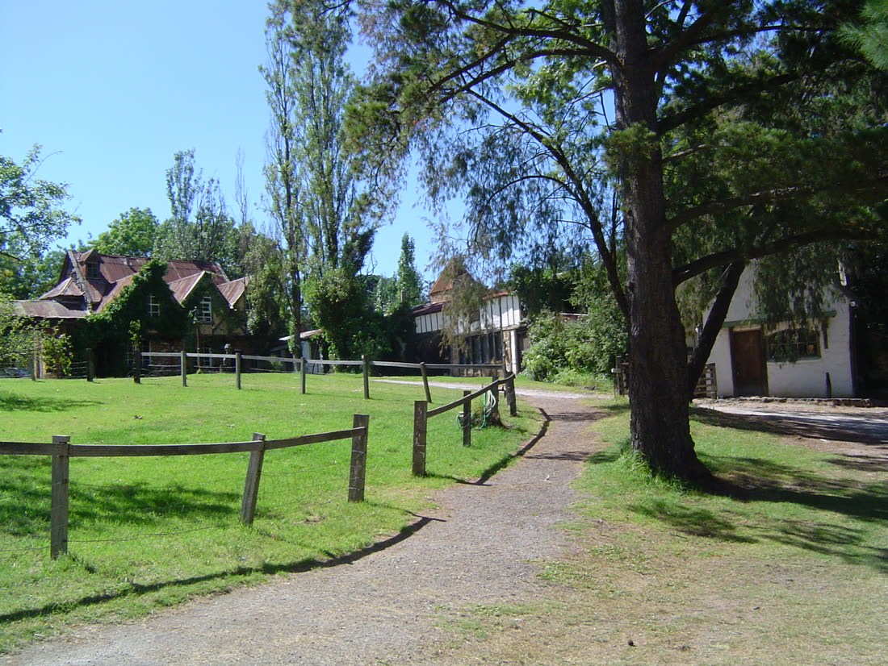
Left: real mud-brick artist houses at Montsalvat in Eltham, the colony that started it all. Right: a bush home.
🔍 Spot it!
A Walls of mud bricks (adobe) from local soil
B Wide roof eaves (overhangs) to shelter the walls
C Big recycled timber beams
D Nestled among Australian gum trees & bush
📖 The story
Here's one from right here in Australia! After World War II, a
self-taught builder named Alistair Knox started making mud-brick homes
around Eltham, near Melbourne — inspired by a nearby artists' colony
called Montsalvat. It began a whole Australian mud-brick movement.
Knox made his bricks from local soil and used lots of recycled
timber, brick and slate. He believed a house should sit gently and naturally
in the bush around it, with wide eaves to shade the earth walls from sun and
rain. He designed over 1,000 buildings — and mud-brick homes are
still built in Eltham today.
Who: Alistair Knox & friends
Climate: warm-dry summers, cool winters
Built with: adobe + recycled timber
Land: the Australian bush
Idea: live gently with nature
Method: adobe (sun-dried)
Wow! Alistair Knox designed more than 1,000 buildings, and there's even a park named after him in Eltham — earth building is alive right near us!
Part Three Compare the Homes
All 24 homes side by side. Great for spotting what they share — and what
makes each one special. Perfect for planning your presentation!
Quick-compare chart (1–12)
#
Home
Where
How old
Way of building
What makes it special
🌎 THE CRADLE — where mud building began
1
Jericho round house
Palestine
~11,000 yrs
adobe
The first mud-brick homes; bricks shaped by hand
2
Çatalhöyük
Turkey
~9,000 yrs
adobe
You entered through a hole in the roof
3
Sumerian house
Iraq
~5,000 yrs
adobe+reed
Reed arches may be the first archways
4
Egyptian house
Egypt
~3,400 yrs
adobe
White walls bounce off the sun; roof for sleeping
🌍 AFRICA — clever tricks against sun and rain
5
Nubian vault
Sudan
~3,000 yrs
vault
A curved roof with no wooden frame
6
Djenné buildings
Mali
700+ yrs
adobe
Toron sticks = a built-in ladder for repairs
7
Musgum shell hut
Cameroon
very old
puddled
Ridges help rain run off & give footholds
8
Kassena house
Burkina Faso
1500s
plaster
Painted patterns that tell stories
🌏 THE DESERTS — staying cool in fierce heat
9
Shibam towers
Yemen
~500 yrs
adobe
Mud skyscrapers up to 11 storeys
10
Yazd house
Iran
2,000+ yrs
adobe
Wind-catcher towers = natural cooling
11
Arg-e Bam
Iran
~2,000 yrs
adobe
Once the biggest mud building on Earth
12
Aït Benhaddou
Morocco
1600s
rammed earth
A fortified movie-star village
Quick-compare chart (13–24)
#
Home
Where
How old
Way of building
What makes it special
🌌 ASIA — cities, clans and caves
13
Mohenjo-daro
Pakistan
~4,500 yrs
adobe+fired
Every brick the same size; had drains & wells
14
Fujian tulou
China
from 1371
rammed earth
A whole village in one round building
15
Yaodong cave
China
3,000+ yrs
cave-cut
The home is dug into the hillside
16
Ladakhi house
India
living
rammed+adobe
Cosy at 20°C inside when −20°C outside
🌎 THE AMERICAS — adobe and prairie earth
17
Taos Pueblo
USA
~1,000 yrs
adobe
Adobe stacked 5 storeys; still lived in
18
Pueblo Bonito
USA
~1,100 yrs
adobe+stone
A giant D-shape with ~800 rooms
19
Adobe casa
USA / Mexico
from 1600s
adobe
Flat roof with water-spouts (canales)
20
Sod house
USA
1800s
sod / turf
Built from blocks of grassy turf
🌐 EUROPE & AUSTRALIA — cottages to modern homes
21
Devon cob cottage
England
500+ yrs
cob
"A good hat and a good pair of shoes"
22
Pisé farmhouse
France
1800s
rammed earth
You can see the stripey pounded layers
23
Alhambra walls
Spain
~800 yrs
rammed earth
Red earth + lime; lasted 800 years
24
Eltham mud-brick
Australia
from 1947
adobe
Our local one — earth homes live gently in the bush
Notice a pattern? Look down the "way of building" column. Adobe
(sun-dried bricks) is the most common of all — used on almost every
continent. Rammed earth turns up wherever people wanted really strong,
long-lasting walls. And clever cooling tricks (thick walls, small windows,
wind-catchers, white paint) appear again and again in hot places.
📚 The Builder's Word List
Some grown-up building words appear in this book. Here's what they all mean, in
plain English. Point to any word you meet and check it here!
Adobe
A brick made of mud and straw, dried hard in the sun (not in an oven).
Badgir
A "wind-catcher" tower that catches the breeze and sends cool air down into a house.
Banco
The smooth mud plaster used to coat buildings in Mali.
Batter
When a wall leans gently inward as it goes up, to make it stronger.
Canales
Little spouts that let rainwater shoot off a flat roof.
Catenary
The special curve a chain makes when it hangs — a very strong shape for arches and roofs.
Cob
A mix of clay, straw and water, stacked by hand into thick walls — no bricks.
Compressed earth block
A modern earth brick squeezed hard in a press instead of dried in the sun.
Courtyard
An open, roofless space in the middle of a house, for shade and fresh air.
Daub
Sticky mud smeared over woven sticks to make a wall (see wattle).
Eaves
The edge of a roof that sticks out past the walls, to keep rain off them.
Ferey
The name for the sun-dried mud bricks used in Djenné, Mali.
Fired brick
A brick baked hard in a very hot fire, so water can't wash it away.
Foundation
The strong base a building stands on, often made of stone.
Insulation
Anything that keeps heat in or out — thick mud walls are great insulation.
Kasbah
A tall earthen house or small fort in North Africa.
Kiva
A round room, often underground, used by Puebloan people for gatherings.
Ksar
A walled village of earthen houses in North Africa.
Laterite
A reddish soil used to make red paint.
Lime
A white powder made from heated limestone; mixed into earth or plaster to make it tougher.
Loess
Soft yellow soil blown into place by wind long ago — easy to dig, holds its shape.
Mortar
The soft paste (often mud) that fills the gaps and glues bricks or stones together.
Nubian vault
A curved mud-brick roof built with no wooden frame, by leaning the bricks.
Pisé
The French word for rammed earth.
Plaster / render
A smooth coat spread over a wall to protect it and make it neat.
Puddled mud
Wet earth piled up by hand in layers, with no bricks and no mould.
Rammed earth
Damp earth poured into a mould and pounded hard until it sets solid.
Sod / turf
A slab of earth held together by thick grass roots, cut and stacked like a brick.
Stucco
A hard outer coating spread over walls to guard them from rain.
Thatch
A thick roof made of bundled straw or reed.
Toron
The wooden sticks that poke out of Djenné's walls, used as a permanent ladder.
Viga
A wooden beam that holds up a flat earth roof (used in the American Southwest).
Wattle
A lattice of woven sticks that gets covered in mud (see daub).
🔨 Which could YOU build?
Every home in this book could become a wonderful model on your 50 cm ×
50 cm base. Here are four that work especially well with real earth and natural
materials — but the choice is all yours, Great Builder. Remember Anik's
words: Look. Listen. Imagine. Plan. Then build.
🏠 Egyptian or Pueblo adobe house ★★★★★ easiest
Make lots of tiny mud bricks in an ice-cube tray or by hand (mud + a little
straw), dry them in the sun, then stack them into walls with mud as glue.
You learn exactly what real adobe builders do. Add a flat cardboard-and-mud roof.
Best for: learning brick-making; a neat, strong result.
🏚 Musgum shell hut or a round house ★★★★
No bricks needed — build up rings of stiff mud (like cob) into a tall dome,
thick at the bottom. Press in herringbone ridges with a stick while it's
wet. Best for: sculpting with your hands; a real "wow" shape.
🌲 Devon cob cottage ★★★★
Build thick, curvy walls from mud mixed with straw on a base of little stones
(its "shoes"), then add a roof of dried grass or straw thatch (its "hat").
Best for: a cosy, forgiving build — cob doesn't mind being bumpy.
🏛 Nubian vault house ★★★ a challenge!
Make mud bricks and lean them to build a curved roof with no frame. Trickier
— but if it stands, it's amazing, and you'll have learned the secret of the
arch. Best for: a builder who loves a puzzle. (Tip: build against a firm
back wall.)
A Great Builder's promise: your first idea might not work — a wall may
fall, a roof may sag. That's not failing, that's building! Just like Anik:
Try. Watch what happens. Change something. Try again.
Photo credits & thank-yous
Every photograph in this book is a freely-shared picture (public
domain or a Creative Commons licence) from Wikimedia Commons. A big thank-you to the
photographers who share their work so children can learn. Each is credited below with
its licence.
1. Jericho — Deror avi, CC BY-SA 3.0
2. Çatalhöyük — Ziggurat, CC BY-SA 3.0
3. Sumerian reed house — Hassan Al-Jarrah, CC BY-SA 4.0
4. Deir el-Medina — Roland Unger, CC BY-SA 3.0
5. Nubian vault — Alain Guilleux, CC BY-SA 3.0
6. Djenné — upyernoz, CC BY 2.0
7. Musgum hut — J. et M.F. Ostorero, CC BY-SA 3.0
8. Kassena / Tiébélé — c.hug, CC BY-SA 2.0
9. Shibam — Jialiang Gao, CC BY-SA 3.0
10. Yazd — Ms96, CC BY-SA 4.0
11. Arg-e Bam — Arad Mojtahedi, CC BY-SA 3.0
12. Aït Benhaddou — Marek Kubica, CC BY-SA 2.0
13. Mohenjo-daro — Saqib Qayyum, CC BY-SA 3.0
14. Fujian tulou — Zhangzhugang, CC BY-SA 3.0
15. Yaodong — Meier&Poehlmann, CC BY 3.0
16. Ladakh (Lamayuru) — Vyacheslav Argenberg, CC BY 4.0
17. Taos Pueblo — Christopher Nicol, CC BY-SA 3.0
18. Pueblo Bonito — Bob Adams, CC BY-SA 3.0
19. Santa Fe (Palace of the Governors) — Einar E. Kvaran, CC BY-SA 3.0
20. Sod house (1886) — Solomon D. Butcher, Public domain
24. Montsalvat, Eltham — Nick Carson, Public domain
For grown-ups: This is a research companion made to help
Arthur learn about the history and styles of earth building. Every fact was checked
against reputable sources (Wikipedia, UNESCO World Heritage listings, the US National
Park Service, World History Encyclopedia and others). The choosing, planning, drawing
and building of Arthur's own model are his own work, as his teacher asks. The
hand-drawn diagrams were made just for this book.
— Made with care for Arthur Parker, Class 3 Great Builder, August 2026 —
Made with care for Arthur Parker, Class 3 Great Builder — a research companion.
The choosing, planning and building of the model are Arthur's own work. 🏠